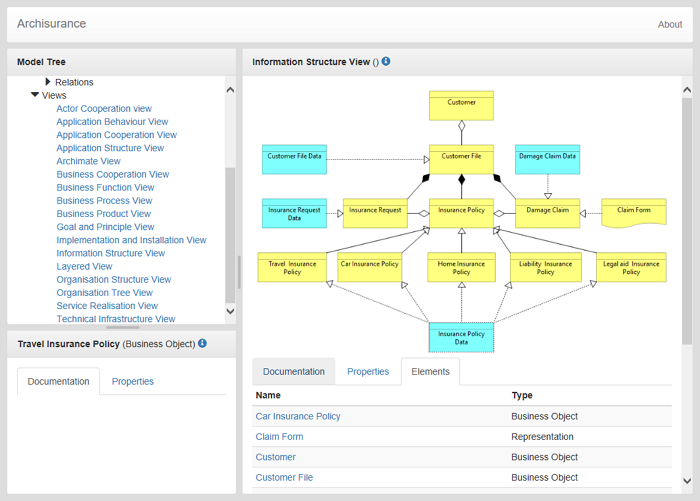

Archi supports web-based reporting functionality by means of generating HTML pages containing a model tree, summary tables of the model objects and the Views in a model.
This option is available from the "Report->HTML..." menu item from the main "File" menu. Once a model is selected in the Model Tree or in a View this menu item is enabled. Select a folder to export the model and its Views.
A single HTML page, "index.html" is generated in the chosen output folder, together with supporting files and image files for the Views in the model.
A generated HTML Report